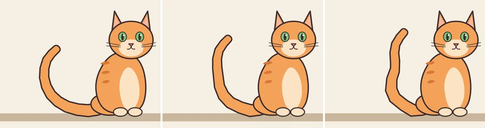
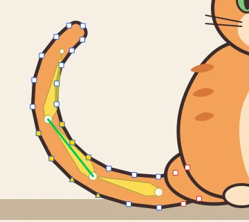
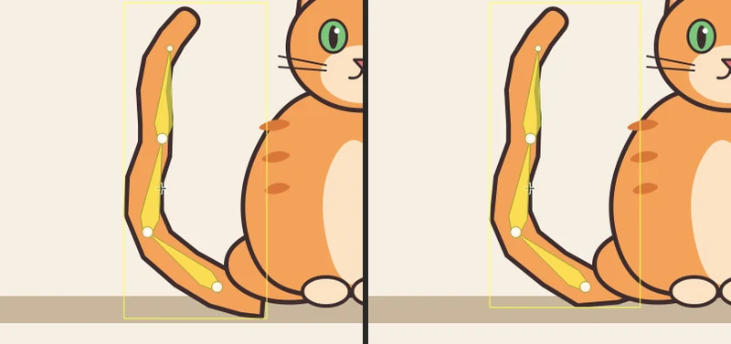

Tutorials
Bones inside a shape
Put three bones inside a cat's tail drawn as a plain shape, swing it up, then use the Bind tool to fix the points that follow the wrong bone.
This page is also a lesson inside Phoenix: choose and start Bones inside a shape, and Phoenix points at each control as you go. It takes about 8 minutes.
To follow along here instead, download the starting document, cat-tail-bones.fla, and open it with .

Bones can go inside a drawing too. Then it bends rather than turning in pieces: each point of its outline follows the bone nearest it.
The cat's tail is one plain shape on the Tail layer, not a symbol. Its end is hidden under the cat's body.
1. Choose the Bone tool
Press M, or click the Bone tool in the toolbox.
2. The first bone
Drag inside the tail from where it comes out from under the cat, beside its back paw, to the left along the tail to where it starts to curve up, and let go.
Phoenix moves the tail into a symbol of its own on a new layer, Armature_1, and ties each point of its outline to the bone nearest it.
3. The second bone
Press on the round joint at the end of that bone and drag up the curve to its middle. A new bone grows from the joint.
4. The third bone
Drag from the new joint up to near the tip of the tail.
5. Go to frame 12
Press V for the Selection tool. In the timeline, click frame 12 of the Armature_1 layer.
6. Swing the tail up
Drag the bone nearest the tip by its end, up and to the right toward the cat's ear. The whole tail swings up and bends to follow.
7. Look closely
Under the cat, a square corner of the tail now pokes out below its body: the end hidden under the cat turned with the first bone and swung out. Where the tail bends near the floor, its outline makes a sharp corner too.
Both come from points that follow the wrong bones. The Bind tool changes which bones a point follows.
8. Back to frame 1
Click frame 1 of Armature_1. Points are best bound where the tail is as you drew it.
9. Choose the Bind tool
The Bind tool shares a slot with the Bone tool: press and hold the slot, then choose Bind. Every point of the tail's outline shows as a small square.
10. Choose the first bone
Click the bone nearest the cat. It is outlined in green, and the points that follow it turn yellow, among them the four at the tail's end, under the cat's body.
11. Let the hidden end stay
Hold Ctrl and click each of the four yellow points under the cat's body, to the right of the bone's round end. Each turns white with a red outline: it follows no bone now, so it stays where it is.
12. Round the bend
With the first bone still chosen, click the point on the tail's lower edge just to the left of the first joint. It follows the second bone; now it follows the first one as well, and shows as a triangle.
13. And the other side

Click the second bone, then the point on the lower edge just to the right of the same joint. It becomes a triangle too: the two points on either side of the bend follow both bones evenly.
14. See the difference
Press V and click frame 12 of Armature_1. The tail's end stays hidden under the cat, and the bend near the floor is rounder.

15. Play it
Press Enter, or click the play button in the timeline header. The tail sweeps up.
What you did
You boned a plain shape and posed it, then changed which bones some of its points follow. Every frame of the armature is bent again from frame 1 when you bind, and each bind is one step to undo.
With the Bind tool, a click on a point binds it to the chosen bone as well as to those it follows, Ctrl-click unbinds it, and Shift-click does one or the other. A square follows one bone, a triangle several, and a red outline none. The second joint, higher up, can be rounded the same way.
For everything this tutorial touches on, see Bones inside a shape and Binding points with the Bind tool.